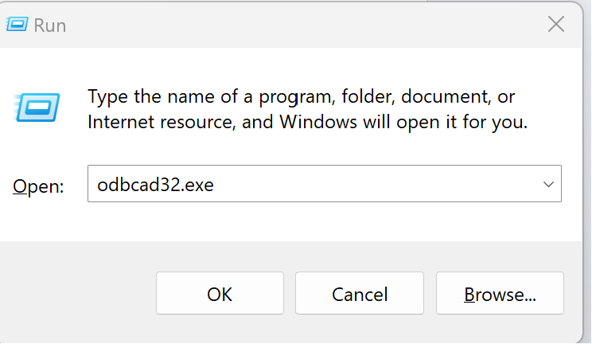

I have been using Quarto in RStudio for a few months now and I am captivated by it’s features. The ability to seamlessly execute SQL queries directly from SQL code chunks and saving results as R data frames is compelling. This connection is valuable when you want to leverage R’s data manipulations capabilities especially the tidyverse packages. We will explore a few examples in the next blog.
For now, let’s focus on establishing connections to and querying the following SQL databases:
- MS SQL Server
- PostegreSQL
My preferred approach needs installation of only two packages. That is: ODBC and DBI. Since I have already installed the two packages, I will go ahead and load them.
library(odbc) # provides drivers to connect to different SQL dialects
library(DBI) # provides functions to interact with the databaseI will begin by connecting to Microsoft SQL Server using the dbConnect function from the DBI package. This function allows for database user authentication and connection establishment. You will need to provide the Driver, Server, Database, UID, and PWD parameters to the dbConnect function. For MS SQL Server, the Server parameter corresponds to the Server name, UID corresponds to Login, and PWD corresponds to Password in the login details, as shown in the first screenshot below. To obtain the MS SQL Driver, navigate to the Drivers tab in the ODBC Data Sources window, as shown in the second screenshot. The driver name will depend on the MS SQL version you are using.

After passing in the required parameters to dbConnect, I will save my connection as mssql_con as shown below. Having established the connection, we are ready to query our MS SQL database.
mssql_con <- DBI::dbConnect(drv = odbc::odbc(),
Driver = "SQL Server",
Server = "DESKTOP-CKPR726",
Database = "Employees"
#UID = "user",
#PWD = "password"
) Once the above code runs, the connection will be established and it will be displayed in the connection pane of your RStudio. As you can see below, we have connected to Employees database, we can see the tables under it, and the column names under Employee_Info table.
Of course we can query from an R code chunk as below using dbGetQuery().
query <- 'SELECT TOP 5 Full_Name, Age, Gender FROM Employee_Info'
employees_df <- DBI::dbGetQuery(mssql_con, query)But let’s focus on how to do this from a sql code chunk. In the SQL code chunk section, assign your connection variable to the connection parameter as shown below.

And then run your queries as below. Our first query will check tables that exist in the Employee database.
SELECT
name AS Table_Name
FROM
Employees.sys.tables| Table_Name |
|---|
| Employee_Info |
| Job_Desc |
| Comp_Info |
Next, we will run a query using GROUP BY and ROLL UP to get Female and Male Employees per country, Female and Male totals, and also all total employees.
SELECT
COALESCE(Gender, 'Employees') AS Gender
,COALESCE(Country, 'Total') AS Country
,COUNT(Full_Name) AS Employee_Counts
FROM
Employee_Info AS EI
LEFT JOIN
Job_Desc AS JD
ON EI.Emp_ID = JD.Emp_ID
WHERE
Country <> 'Kenya'
GROUP BY
ROLLUP (Gender, Country)| Gender | Country | Employee_Counts |
|---|---|---|
| Female | Brazil | 60 |
| Female | China | 98 |
| Female | United States | 313 |
| Female | Total | 471 |
| Male | Brazil | 65 |
| Male | China | 102 |
| Male | United States | 271 |
| Male | Total | 438 |
| Employees | Total | 909 |
You’ll want to save the output of your query into a df that you can use in R.
We save the output by passing a variable name to the output.var option in the sql code chunk as shown below.

And then run your query. The query output will be saved as employee_gender_per_ctry and it will be one of the variables in your environment window in RStudio.
SELECT
COALESCE(Gender, 'Total') AS Gender
,COALESCE(Country, 'all countries') AS Country
,COUNT(Full_Name) AS Employee_Counts
FROM
Employee_Info AS EI
LEFT JOIN
Job_Desc AS JD
ON EI.Emp_ID = JD.Emp_ID
WHERE
Country <> 'Kenya'
GROUP BY
CUBE (Gender, Country)
Here is our stored query output.
employee_gender_per_ctry Gender Country Employee_Counts
1 Female Brazil 60
2 Male Brazil 65
3 Total Brazil 125
4 Female China 98
5 Male China 102
6 Total China 200
7 Female United States 313
8 Male United States 271
9 Total United States 584
10 Total all countries 909
11 Female all countries 471
12 Male all countries 438For postgreSQL, you will follow the same procedure as we did with MS SQL and pass in the login details provided by your Database administrator. In my case, I’m the superuser 😎. Since my database is hosted locally, my server will be localhost, UID = postgres and PWD = postgres. These are the defaults when you install postgreSQL. But I changed my PWD to maangi.
The most important thing will be knowing the driver to use. Accessing these details is slightly different from accessing the MS SQL driver. Follow the following steps:
On you windows laptop, you click the windows key + R.
On the window that pops up, type - odbcad32.exe
Click ok and navigate to the Drivers tab and pick the appropriate driver name as shown below.
Having passed in all the required parameters to dbConnect, I will proceed to create a connection variable called postegresql_con.
# Establish the connection
postgresql_con <- dbConnect(odbc::odbc(),
Driver = "PostgreSQL ODBC Driver(ANSI)",
Database = "car_brands",
Server = "localhost",
UID = "postgres",
PWD = "maangi"
)On running the above connection query, if you navigate to the connections pane in your RStudio, you will see that a connection has been establisted to postgresSQL.

Since we have established a connection, we can now query postgreSQL straight from a SQL code chunk in quarto as below.

SELECT * FROM carscars brand model year
1 Volvo p1800 1968
2 BMW M1 1978
3 Toyota Celica 1975There is a second approach that we can use to connect to postgreSQL. In this case, we will need to install and load the RPostgres package. Most of the parameters we pass in are similar except for port which we didn’t provide in the first approach and driver which is not needed in this case.
# load the required library
library(RPostgres)
# Replace these values with your actual database credentials
postgresql_con2 <- dbConnect(RPostgres::Postgres(),
dbname = "car_brands",
user = "postgres",
password = "maangi",
host = "localhost",
port = 5432 # The default PostgreSQL port is 5432
)Lastly, it’s a good practice to disconnect from you database when you are done querying it to free up your laptop resources.
# disconnect from MS SQL
dbDisconnect(mssql_con)
# disconnect from MS SQL
dbDisconnect(postgresql_con)
dbDisconnect(postgresql_con2)